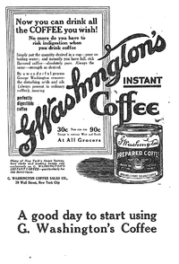

VİKİPEDİ
Özgür ansiklopedi
Özgür ansiklopedi
Vikipedi'yeHoş Geldiniz
Herkesin katkıda bulanabildiği özgür ansiklopedi
 George Constant Louis Washington (20 Mayıs 1871 - 29 Mart 1946), Anglo-Belçika asıllı Amerikalı mucit ve iş adamıdır. Geliştirdiği hazır kahve hazırlama yöntemi ve bunun seri üretimini gerçekleştirmek amacıyla kurduğu G. Washington Coffee Company adlı şirketle tanınmıştır. Belçika doğumlu olan Washington 1897 yılında Amerika Birleşik Devletleri'nin New York bölgesine yerleşmiş, teknik alanlardaki birçok başarısız girişimin ardından hazır kahve üretimine başlamıştır. Orta Amerika'da bulunduğu 1906-1907 yılları arasında elde ettiği deneyimle 1909'da kendi ürettiği kahveyi satmaya başlayan Washington, üretimi hızlandırmak amacıyla 1910 yılında bir şirket kurmuştur. New York ve New Jersey merkezli şirket kısa sürede büyümüş ve ABD ordusunun I. Dünya Savaşı sırasındaki kahve gereksiniminin büyük bölümünü karşılamıştır. Reklamları New York gazete ve radyolarında da yayınlanan şirketin ulaştığı başarı Washington'ı varsıl kılmış; sonuçta mucit Brooklyn'de kaldığı konağın ardından 1927 yılında New Jersey'de bir malikâneye taşınmıştır. (Devamı...)
Herkesi "Farklı sayfalardan kendisine birçok bağlantı verilmiş tarih maddelerinin oluşturulması" konulu iş birliği projesine davet ediyoruz!